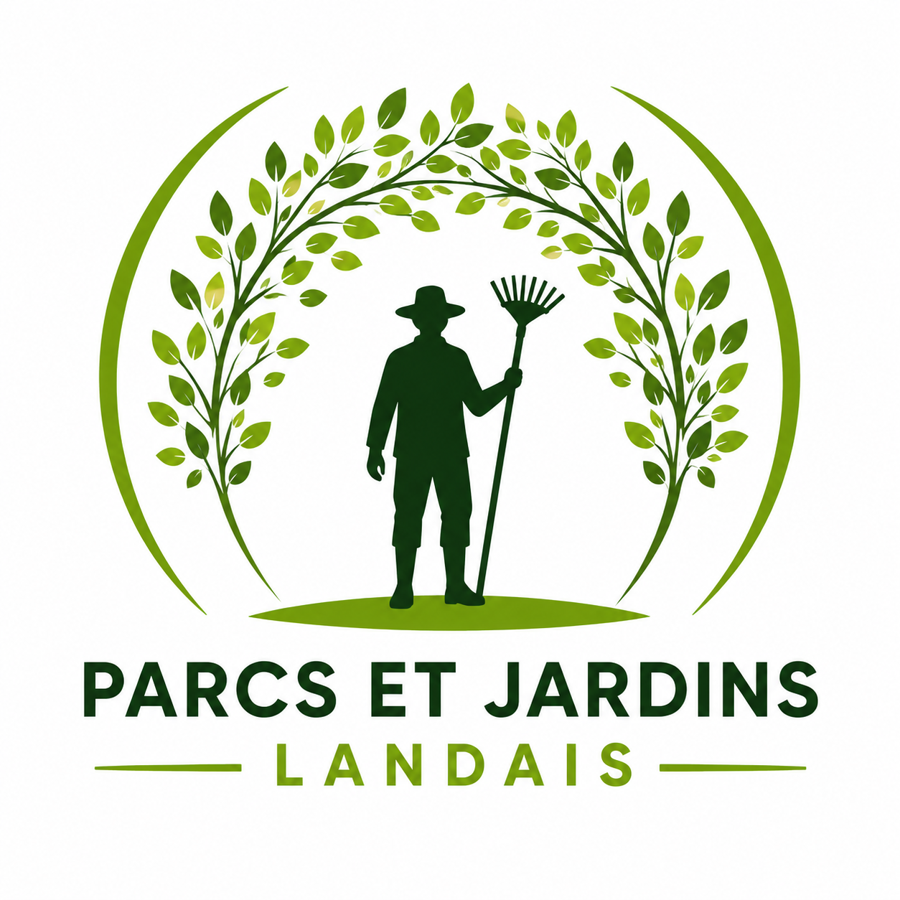
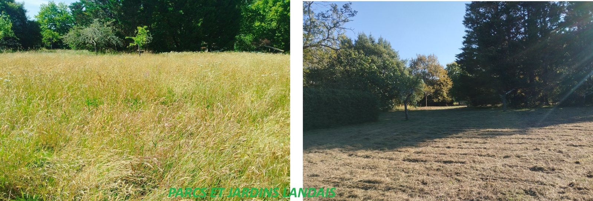
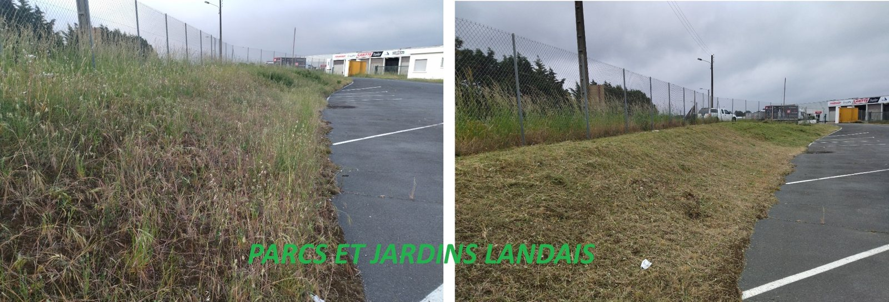
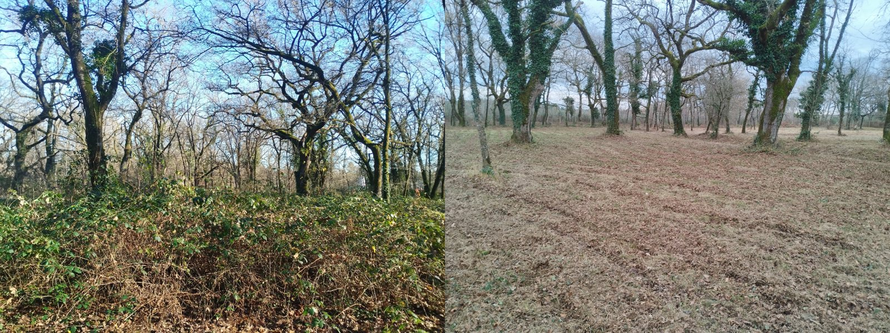
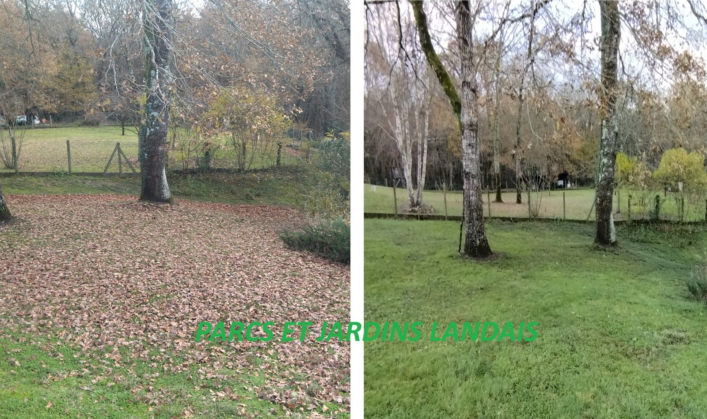
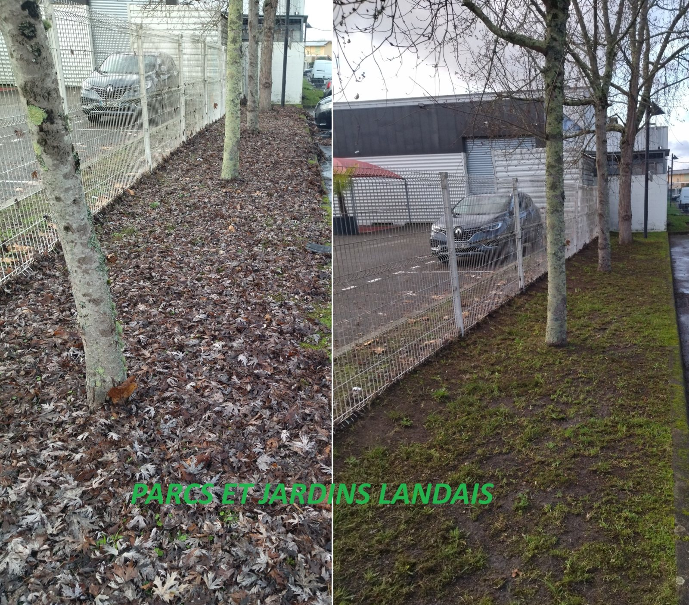
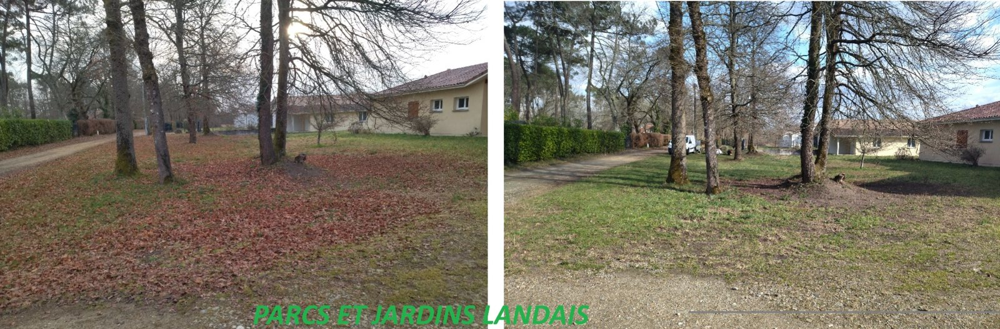
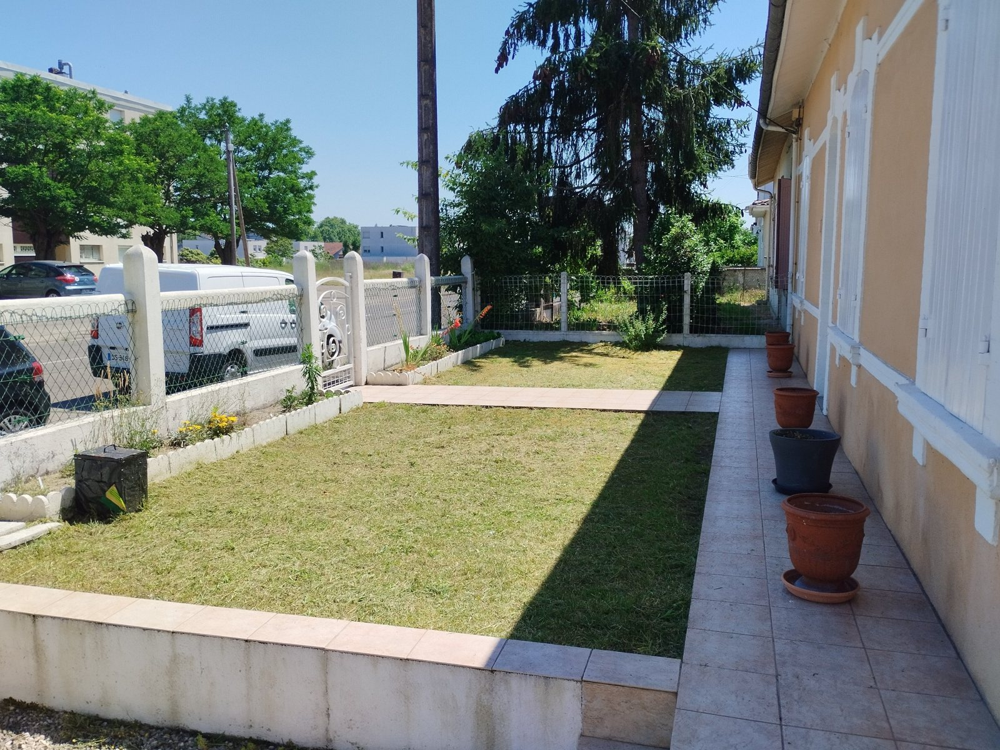
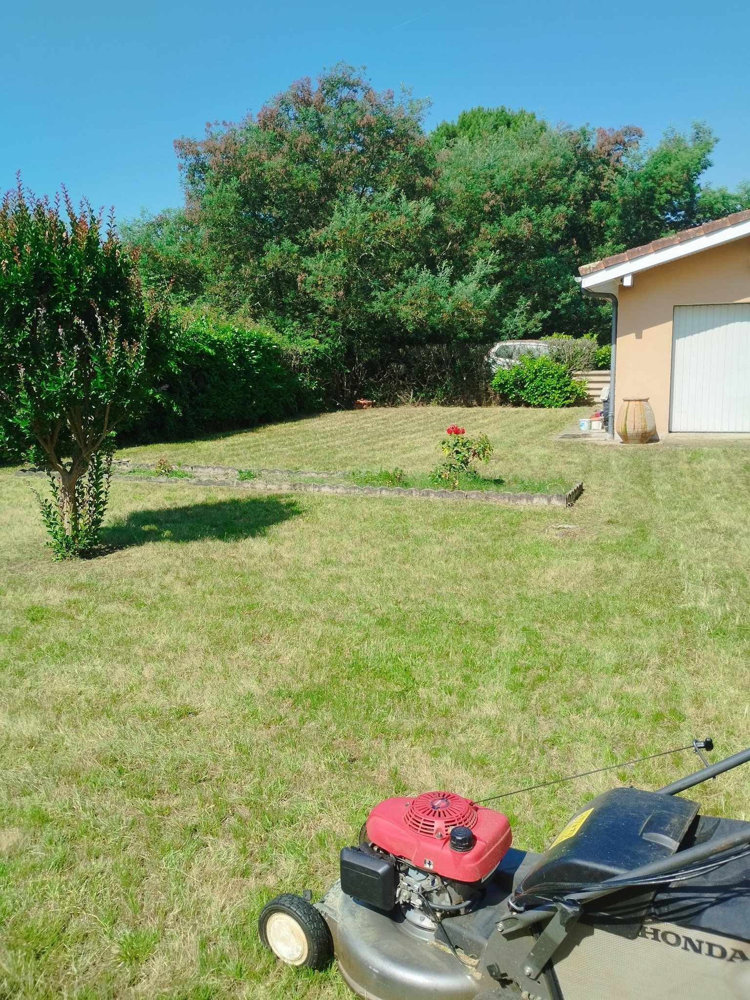

Tonte
Entretien ponctuel ou régulier des pelouses.

Artassenx • Mont-de-Marsan • Landes
Entretien ponctuel ou régulier des pelouses.
Taille et remise en forme de vos haies et arbustes.
Terrains, parcelles, talus, sous-bois et grandes surfaces.
Ramassage de feuilles et nettoyage des abords.
Uniquement des photos de chantiers réalisés par Parcs et Jardins Landais.









Je m'appelle Vincent Bugnicourt, fondateur de Parcs et Jardins Landais. Depuis 6 ans, j'accompagne les particuliers, les professionnels et les collectivités pour l'entretien de leurs espaces verts.
Basé à Artassenx, près de Mont-de-Marsan, j'interviens dans les Landes et les secteurs limitrophes selon l'ampleur du chantier.
Téléphone : 06 11 33 57 56
E-mail : parcsetjardinslandais@gmail.com
Appeler maintenant